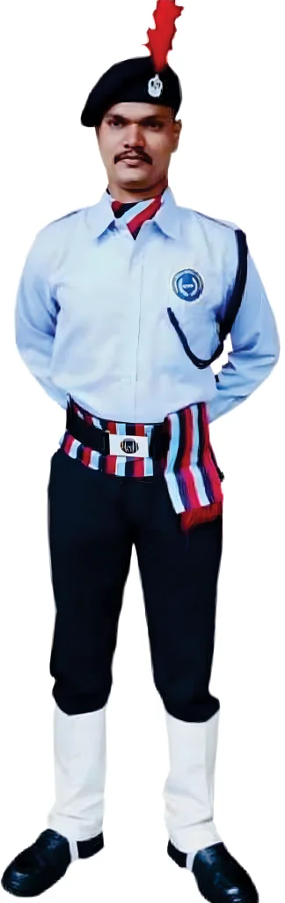
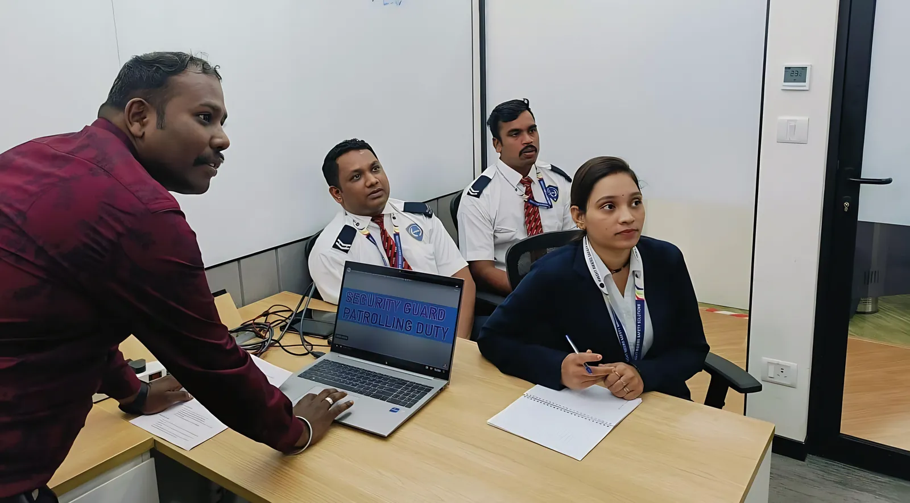
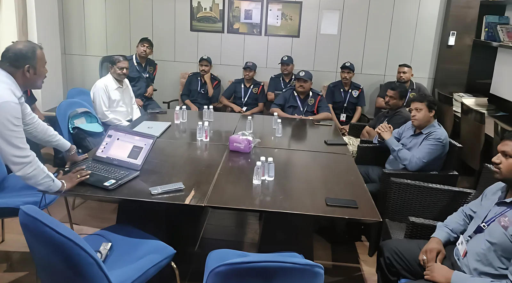

A stronger line
of protection.
Trained, committed and disciplined security personnel — backed by regular audits, mobile patrolling and electronic systems.

Safeguard people, places and assets.
Corporate infrastructure and its workforce are integral to any growing organisation — and recent years have seen a rise in security breaches that hit the bottom line.
KRSS is a forerunner in the region, known for its trained, committed, motivated and disciplined workforce, delivering high-quality services to large corporate houses and commercial complexes in metro and tier-2 / tier-3 cities.
Discuss Your Security Needs ↗
Our protective capabilities
Manpower, process and technology working together for site security.
◈ Manned Guarding
Trained and supervised guards and security supervisors deployed to each property’s needs.
◈ Gate Operations & Access Control
Strict gate discipline, vehicle management and safeguarding of assets and amenities.
◈ Regular Security Audits
Periodic audits by a team of professionals, with recommendations to improve security.
◈ Mobile Patrolling
Surprise and scheduled night checks by officers, with Area Officers reporting to HO.
◈ Electronic Systems & Operators
CCTV, baggage scanners, DFMD and HHMD — installed and run by trained operators.
◈ Emergency Response Team
Evacuation, first aid, rescue, fire-fighting, bomb-threat response and liaison with authorities.

Prepared for the site. Ready for the situation.
Training security personnel is an ongoing process. It begins with classroom training, followed by 72 hours of on-the-job training (OJT).
Physical & combat readiness
KRSS conducts physical exercises and combat training daily before the day’s work begins. Members of the Emergency Response Team undergo regular fire-fighting and rescue drills.
Training in action
Guards briefed through real duty scenarios, not just paperwork.



- Residential Federation SOP
- Gate operations & vehicle management
- Asset protection & amenities safeguarding
- Strict gate discipline
- Patrolling (rounding)
- Fire safety & emergency response
- Grooming & professional conduct
- Relieving procedure
360° safety & security
“Our team — a driving force behind the scenes — strives hard to achieve customer satisfaction, taking you to the next level of security.”
Regular security audit
Periodic security audits are carried out at all properties by a team of professionals, with recommendations made to clients for any changes needed to improve security.
Monitoring of properties
Surprise and scheduled night checks are done by officers. Branch heads make frequent site visits for first-hand information, and Area Officers report to HO for any action needed.

Electronic systems & operators
Round-the-clock vigilance
Malls and commercial properties are vulnerable targets for terrorism and other violent attacks. An emergency management plan deters such activities. KRSS complements this with a 365-day, 24×7 plan — installing security systems and providing trained staff of all cadres to keep constant watch on any suspicious activity.
Systems + trained operators
Along with installing security systems, we provide trained operators to ensure they perform effectively.